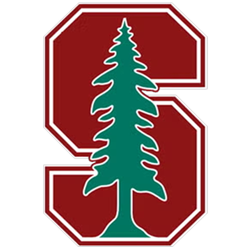
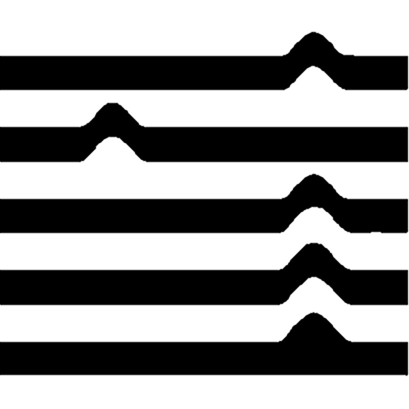
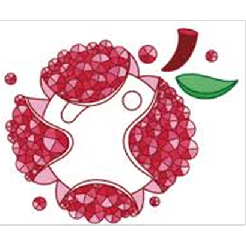

Chester(Zhaohan) Pan is an Human-Computer Interaction researcher, designer, and educator.
He is currently a visiting researcher at South Technoligical University in Shenzhen, China, advised by Prof. Seugwoo Je.
Chester received his B.S. degree in Civil Engineering from the University of Washington🌸 with magna cum laude, and M.S. degree in Mechanical Engineering from Stanford University🌲.
He is an alumnus of
SHAPE Lab and was advised by
Prof. Sean Follmer at Stanford.
He is also a former student of
Boeing Advanced Researcher Collaboration and
illimited Lab at UW, where he primarily worked with
Prof. Richard Wiebe and also had collaborations with
Prof. Ed Habtour and
Prof. Marco Salviato.
Beyond the focus on spatial computing and wearable intelligence, Chester also had abondant experiences in accessibility design, haptics, computational design-fabrication,
3D printing, structural mechanics, and algorithmical modeling(optimization, decision making, etc.).
Education and Affilication

M.S. in Mechanical Engineering
Depth in Automatic Control, Breadth in Data Science
Accessbile Computer Interfaces
Smart Intelligent Materials Lab
Spinner for Thrombectomy
B.S. in Civil Engineering, Magna cum laude

3D Printed Spider Web Structures
Boeing Advanced Research Collaboration
Additively Manufactured Polymer Structures
Work and Employment
Visiting Researcher, South Technoligical University
?

FCC High School Mentor (regular)
Litchee Lab
FCC High School Mentor (2024 Summer)
Litchee Lab
Professional Staff, Full Time
Department of Civil & Environmental Engineering, UW
Student Assistant, Part Time
William E. Boeing Department of Aeronautics & Astronautics, UW
Undergraduate Research Assistant, Part Time
Department of Civil & Environmental Engineering, UW